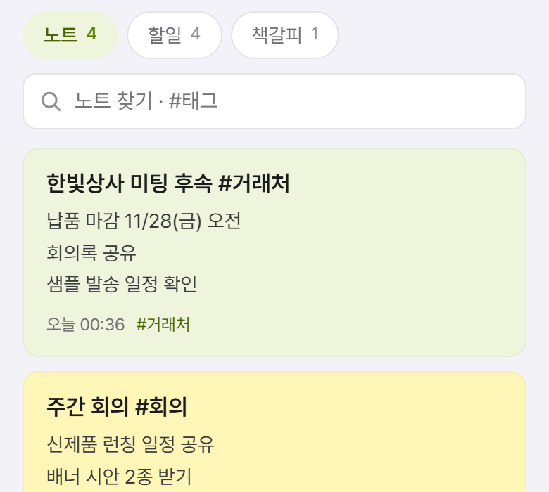

tidy notes
tidy notes회사 PC에서 쓴 노트를
휴대폰에서 봐요

Tidy Notes를 연결한 Google 계정으로 들어오면, 내 Drive의 TidyNotes 폴더에서 노트를 바로 읽어 보여 드려요.
- 노트는 휴대폰과 내 Google Drive 사이에서만 오가요. 우리 서버를 거치지 않아요.
- Tidy Notes가 만든 TidyNotes 폴더만 열 수 있어요. 다른 Drive 파일은 볼 수 없어요.
- 이 화면을 닫으면 휴대폰에도 남지 않아요.